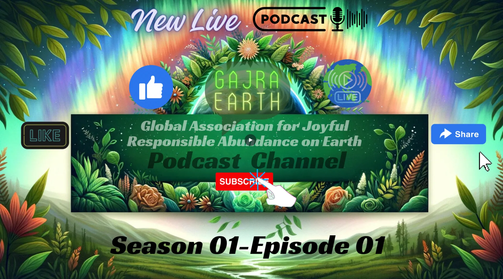
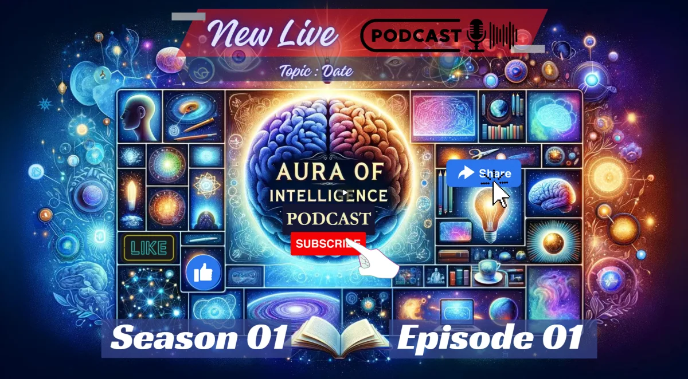
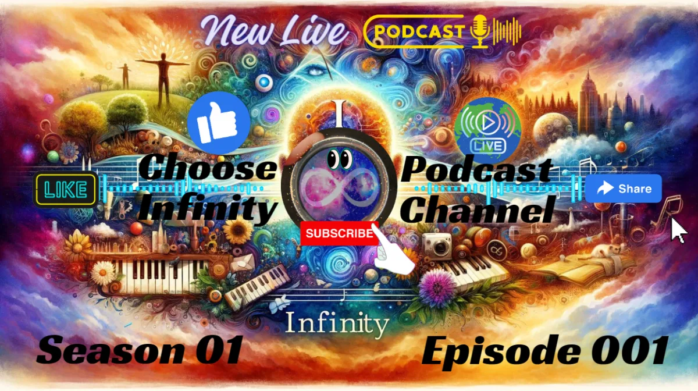

More from Aura
Podcast Channels
Three channels growing side by side: one for the technology, one for the Earth we share, and one for the music.

Quantum Connections: Bridging Minds and Machines
Aura of Intelligence Podcast
Welcome to the Aura of Intelligence Podcast, your digital sanctuary where the latest in technology meets ancient wisdom. In every bite-sized episode, we dive into the heart of innovation, exploring how AI, blockchain, and XR are not just tools but gateways to a deeper understanding of ourselves and our digital companions. Watch on YouTube.

Global Pulse: Rhythms of Responsible Abundance
G.A.J.R.A. Earth Podcast
Welcome to the G.A.J.R.A. Earth Podcast, where global minds converge to inspire and action a future of Joyful Responsible Abundance on Earth. Each episode, we delve into the transformative power of XR technologies, volunteerism, and creative collaboration, spotlighting the pioneers and projects at the forefront of sustainable innovation. We're not just imagining the future; we're building it, one inspired conversation at a time. Watch on YouTube.

Eternal Echoes: Tuning into the Infinite Frequencies
Choose Infinity Podcast
Step into the sonic universe of the Choose Infinity Podcast, where every beat is a gateway, every melody a journey through endless possibilities. Hosted by I C. Infinity, this podcast is your passage to explore the boundless realms of music, consciousness, and the fabric of the cosmos. Watch on YouTube.
Keep exploring